Phase 3: Podman Service Deployment¶
In this phase, we deploy the full application stack using Podman — a rootless, secure container runtime. Podman replaces Docker and integrates cleanly with systemd for persistent service management.
📦 Phase 3 – Podman Service Deployment¶

🧰 Prerequisites¶
- Host hardened via Ansible (see Phase 2)
podman,podman-compose, anduidmapinstalled- Containers will run as non-root service user
🧱 Recommended Structure¶
services/
├── keycloak/
│ └── podman-compose.yml
├── nextcloud/
│ └── podman-compose.yml
├── mailcow/
│ └── podman-compose.yml
├── wazuh/
│ └── podman-compose.yml
└── step-ca/
└── podman-compose.yml
Each subdirectory contains:
- A podman-compose.yml equivalent
- A .env file (secured)
- Systemd unit files for automatic start
⚙️ Systemd Unit Template¶
[Unit]
Description=Podman container for Keycloak
Wants=network.target
After=network.target
[Service]
User=svc_keycloak
ExecStart=/usr/bin/podman-compose -f /opt/services/keycloak/podman-compose.yml up
ExecStop=/usr/bin/podman-compose -f /opt/services/keycloak/podman-compose.yml down
Restart=always
Environment=KEYCLOAK_ADMIN=admin
EnvironmentFile=/opt/services/keycloak/.env
[Install]
WantedBy=multi-user.target
Install with:
sudo systemctl daemon-reexec
sudo systemctl enable --now podman-keycloak.service
🔒 Security Practices¶
- Use separate service accounts for each container
- Do not expose any service directly to WAN
- Use reverse proxy (Caddy or NGINX Proxy Manager) for HTTPS
✅ Output of This Phase¶
- All major services running under rootless Podman containers
- Containers persist across reboots via systemd
- Services are not exposed to public without proxying
→ Proceed to Phase 4: Identity, Certs, and Access Control